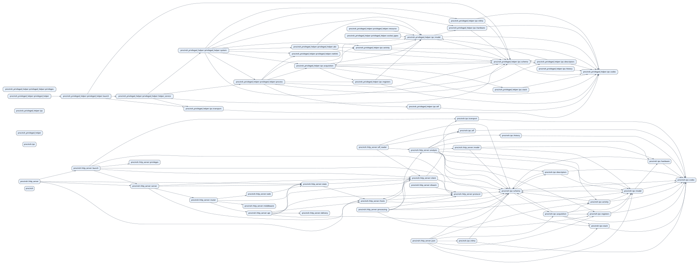
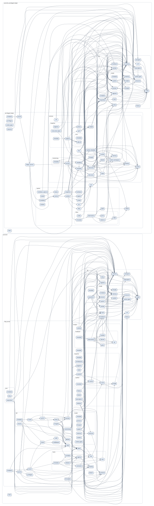

Includes both executables: procinsh (HTTP server) and
procinsh_privileged_helper (privileged acquisition helper).
Each executable has its own module tree, including its copy of the shared IPC modules.
Arrows mean user → dependency. Opposite arrows show mutual dependencies; longer cycles can be followed along the arrows.

